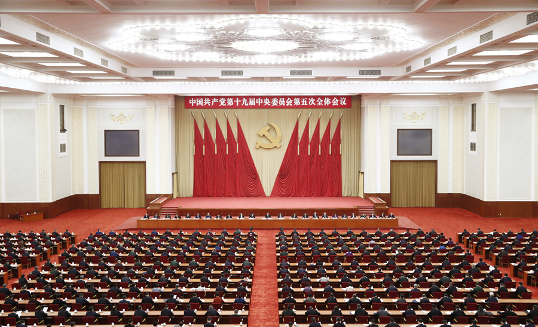
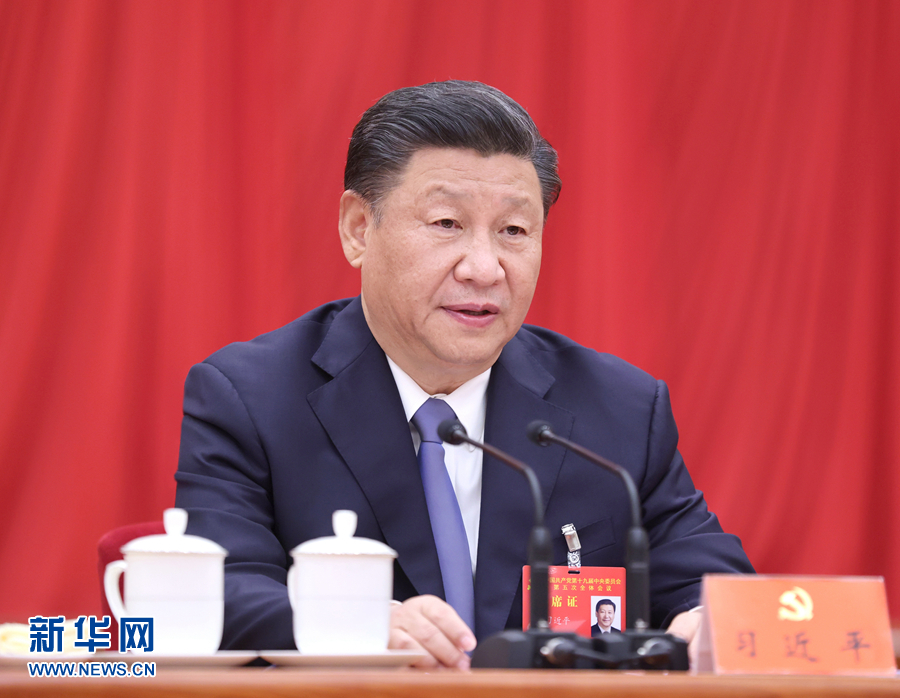
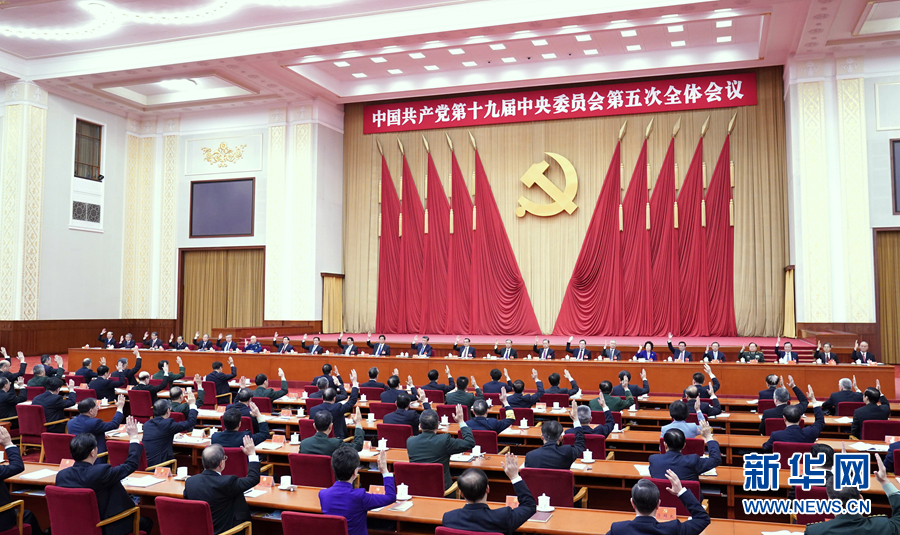
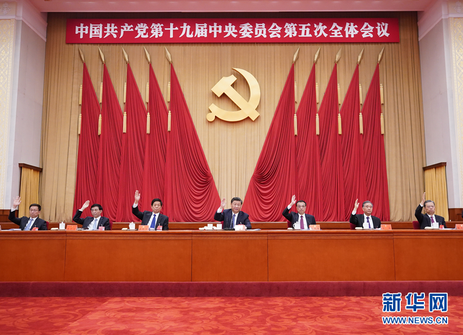
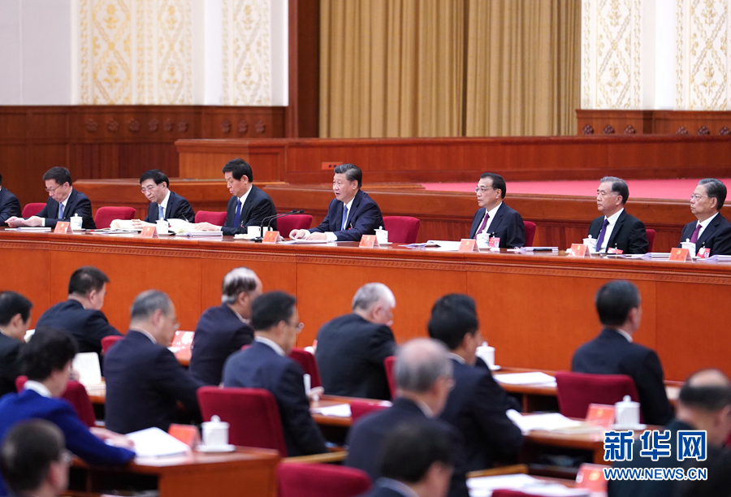

您当前的位置：首页 > 新闻
中国共产党第十九届中央委员会第五次全体会议公报
发布时间：2020-10-29来源：新华网
中国共产党第十九届中央委员会第五次全体会议公报
（2020年10月29日中国共产党第十九届中央委员会第五次全体会议通过）

中国共产党第十九届中央委员会第五次全体会议，于2020年10月26日至29日在北京举行。
出席这次全会的有，中央委员198人，候补中央委员166人。中央纪律检查委员会常务委员会委员和有关方面负责同志列席会议。党的十九大代表中的部分基层同志和专家学者也列席会议。
全会由中央政治局主持。中央委员会总书记习近平作了重要讲话。

中国共产党第十九届中央委员会第五次全体会议，于2020年10月26日至29日在北京举行。中央委员会总书记习近平作重要讲话。 新华社记者 鞠鹏 摄
全会听取和讨论了习近平受中央政治局委托作的工作报告，审议通过了《中共中央关于制定国民经济和社会发展第十四个五年规划和二〇三五年远景目标的建议》。习近平就《建议（讨论稿）》向全会作了说明。
全会充分肯定党的十九届四中全会以来中央政治局的工作。一致认为，一年来，中央政治局高举中国特色社会主义伟大旗帜，坚持以马克思列宁主义、毛泽东思想、邓小平理论、“三个代表”重要思想、科学发展观、习近平新时代中国特色社会主义思想为指导，全面贯彻党的十九大和十九届二中、三中、四中全会精神，增强“四个意识”、坚定“四个自信”、做到“两个维护”，统筹推进“五位一体”总体布局，协调推进“四个全面”战略布局，坚持稳中求进工作总基调，坚持新发展理念，坚定不移推进改革开放，沉着有力应对各种风险挑战，统筹新冠肺炎疫情防控和经济社会发展工作，把人民生命安全和身体健康放在第一位，把握扩大内需这个战略基点，深化供给侧结构性改革，加大宏观政策应对力度，扎实做好“六稳”工作、全面落实“六保”任务，坚决维护国家主权、安全、发展利益，疫情防控工作取得重大战略成果，三大攻坚战扎实推进，经济增长好于预期，人民生活得到有力保障，社会大局保持稳定，中国特色大国外交积极推进，党和国家各项事业取得新的重大成就。

中国共产党第十九届中央委员会第五次全体会议，于2020年10月26日至29日在北京举行。中央政治局主持会议。 新华社记者 殷博古 摄
全会一致认为，面对错综复杂的国际形势、艰巨繁重的国内改革发展稳定任务特别是新冠肺炎疫情严重冲击，以习近平同志为核心的党中央不忘初心、牢记使命，团结带领全党全国各族人民砥砺前行、开拓创新，奋发有为推进党和国家各项事业，战胜各种风险挑战，中国特色社会主义的航船继续乘风破浪、坚毅前行。实践再次证明，有习近平同志作为党中央的核心、全党的核心领航掌舵，有全党全国各族人民团结一心、顽强奋斗，我们就一定能够战胜前进道路上出现的各种艰难险阻，一定能够在新时代把中国特色社会主义更加有力地推向前进。
全会高度评价决胜全面建成小康社会取得的决定性成就。“十三五”时期，全面深化改革取得重大突破，全面依法治国取得重大进展，全面从严治党取得重大成果，国家治理体系和治理能力现代化加快推进，中国共产党领导和我国社会主义制度优势进一步彰显；经济实力、科技实力、综合国力跃上新的大台阶，经济运行总体平稳，经济结构持续优化，预计二〇二〇年国内生产总值突破一百万亿元；脱贫攻坚成果举世瞩目，五千五百七十五万农村贫困人口实现脱贫；粮食年产量连续五年稳定在一万三千亿斤以上；污染防治力度加大，生态环境明显改善；对外开放持续扩大，共建“一带一路”成果丰硕；人民生活水平显著提高，高等教育进入普及化阶段，城镇新增就业超过六千万人，建成世界上规模最大的社会保障体系，基本医疗保险覆盖超过十三亿人，基本养老保险覆盖近十亿人，新冠肺炎疫情防控取得重大战略成果；文化事业和文化产业繁荣发展；国防和军队建设水平大幅提升，军队组织形态实现重大变革；国家安全全面加强，社会保持和谐稳定。“十三五”规划目标任务即将完成，全面建成小康社会胜利在望，中华民族伟大复兴向前迈出了新的一大步，社会主义中国以更加雄伟的身姿屹立于世界东方。

中国共产党第十九届中央委员会第五次全体会议，于2020年10月26日至29日在北京举行。这是习近平、李克强、栗战书、汪洋、王沪宁、赵乐际、韩正等在主席台上。 新华社记者 王晔 摄
全会强调，全党全国各族人民要再接再厉、一鼓作气，确保如期打赢脱贫攻坚战，确保如期全面建成小康社会、实现第一个百年奋斗目标，为开启全面建设社会主义现代化国家新征程奠定坚实基础。
全会深入分析了我国发展环境面临的深刻复杂变化，认为当前和今后一个时期，我国发展仍然处于重要战略机遇期，但机遇和挑战都有新的发展变化。当今世界正经历百年未有之大变局，新一轮科技革命和产业变革深入发展，国际力量对比深刻调整，和平与发展仍然是时代主题，人类命运共同体理念深入人心，同时国际环境日趋复杂，不稳定性不确定性明显增加。我国已转向高质量发展阶段，制度优势显著，治理效能提升，经济长期向好，物质基础雄厚，人力资源丰富，市场空间广阔，发展韧性强劲，社会大局稳定，继续发展具有多方面优势和条件，同时我国发展不平衡不充分问题仍然突出，重点领域关键环节改革任务仍然艰巨，创新能力不适应高质量发展要求，农业基础还不稳固，城乡区域发展和收入分配差距较大，生态环保任重道远，民生保障存在短板，社会治理还有弱项。全党要统筹中华民族伟大复兴战略全局和世界百年未有之大变局，深刻认识我国社会主要矛盾变化带来的新特征新要求，深刻认识错综复杂的国际环境带来的新矛盾新挑战，增强机遇意识和风险意识，立足社会主义初级阶段基本国情，保持战略定力，办好自己的事，认识和把握发展规律，发扬斗争精神，树立底线思维，准确识变、科学应变、主动求变，善于在危机中育先机、于变局中开新局，抓住机遇，应对挑战，趋利避害，奋勇前进。

十九届中央委员会第五次全体会议，于2020年10月26日至29日在北京举行。这是习近平、李克强、栗战书、汪洋、王沪宁、赵乐际、韩正等在主席台上。 新华社记者 殷博古 摄
全会提出了到二〇三五年基本实现社会主义现代化远景目标，这就是：我国经济实力、科技实力、综合国力将大幅跃升，经济总量和城乡居民人均收入将再迈上新的大台阶，关键核心技术实现重大突破，进入创新型国家前列；基本实现新型工业化、信息化、城镇化、农业现代化，建成现代化经济体系；基本实现国家治理体系和治理能力现代化，人民平等参与、平等发展权利得到充分保障，基本建成法治国家、法治政府、法治社会；建成文化强国、教育强国、人才强国、体育强国、健康中国，国民素质和社会文明程度达到新高度，国家文化软实力显著增强；广泛形成绿色生产生活方式，碳排放达峰后稳中有降，生态环境根本好转，美丽中国建设目标基本实现；形成对外开放新格局，参与国际经济合作和竞争新优势明显增强；人均国内生产总值达到中等发达国家水平，中等收入群体显著扩大，基本公共服务实现均等化，城乡区域发展差距和居民生活水平差距显著缩小；平安中国建设达到更高水平，基本实现国防和军队现代化；人民生活更加美好，人的全面发展、全体人民共同富裕取得更为明显的实质性进展。
全会提出了“十四五”时期经济社会发展指导思想和必须遵循的原则，强调要高举中国特色社会主义伟大旗帜，深入贯彻党的十九大和十九届二中、三中、四中、五中全会精神，坚持以马克思列宁主义、毛泽东思想、邓小平理论、“三个代表”重要思想、科学发展观、习近平新时代中国特色社会主义思想为指导，全面贯彻党的基本理论、基本路线、基本方略，统筹推进经济建设、政治建设、文化建设、社会建设、生态文明建设的总体布局，协调推进全面建设社会主义现代化国家、全面深化改革、全面依法治国、全面从严治党的战略布局，坚定不移贯彻创新、协调、绿色、开放、共享的新发展理念，坚持稳中求进工作总基调，以推动高质量发展为主题，以深化供给侧结构性改革为主线，以改革创新为根本动力，以满足人民日益增长的美好生活需要为根本目的，统筹发展和安全，加快建设现代化经济体系，加快构建以国内大循环为主体、国内国际双循环相互促进的新发展格局，推进国家治理体系和治理能力现代化，实现经济行稳致远、社会安定和谐，为全面建设社会主义现代化国家开好局、起好步。坚持党的全面领导，坚持和完善党领导经济社会发展的体制机制，坚持和完善中国特色社会主义制度，不断提高贯彻新发展理念、构建新发展格局能力和水平，为实现高质量发展提供根本保证。坚持以人民为中心，坚持新发展理念，坚持深化改革开放，坚持系统观念。
全会提出了“十四五”时期经济社会发展主要目标，这就是：经济发展取得新成效，在质量效益明显提升的基础上实现经济持续健康发展，增长潜力充分发挥，国内市场更加强大，经济结构更加优化，创新能力显著提升，产业基础高级化、产业链现代化水平明显提高，农业基础更加稳固，城乡区域发展协调性明显增强，现代化经济体系建设取得重大进展；改革开放迈出新步伐，社会主义市场经济体制更加完善，高标准市场体系基本建成，市场主体更加充满活力，产权制度改革和要素市场化配置改革取得重大进展，公平竞争制度更加健全，更高水平开放型经济新体制基本形成；社会文明程度得到新提高，社会主义核心价值观深入人心，人民思想道德素质、科学文化素质和身心健康素质明显提高，公共文化服务体系和文化产业体系更加健全，人民精神文化生活日益丰富，中华文化影响力进一步提升，中华民族凝聚力进一步增强；生态文明建设实现新进步，国土空间开发保护格局得到优化，生产生活方式绿色转型成效显著，能源资源配置更加合理、利用效率大幅提高，主要污染物排放总量持续减少，生态环境持续改善，生态安全屏障更加牢固，城乡人居环境明显改善；民生福祉达到新水平，实现更加充分更高质量就业，居民收入增长和经济增长基本同步，分配结构明显改善，基本公共服务均等化水平明显提高，全民受教育程度不断提升，多层次社会保障体系更加健全，卫生健康体系更加完善，脱贫攻坚成果巩固拓展，乡村振兴战略全面推进；国家治理效能得到新提升，社会主义民主法治更加健全，社会公平正义进一步彰显，国家行政体系更加完善，政府作用更好发挥，行政效率和公信力显著提升，社会治理特别是基层治理水平明显提高，防范化解重大风险体制机制不断健全，突发公共事件应急能力显著增强，自然灾害防御水平明显提升，发展安全保障更加有力，国防和军队现代化迈出重大步伐。
中国共产党第十九届中央委员会第五次全体会议，于2020年10月26日至29日在北京举行。 新华社记者 刘彬 摄
全会提出，坚持创新在我国现代化建设全局中的核心地位，把科技自立自强作为国家发展的战略支撑，面向世界科技前沿、面向经济主战场、面向国家重大需求、面向人民生命健康，深入实施科教兴国战略、人才强国战略、创新驱动发展战略，完善国家创新体系，加快建设科技强国。要强化国家战略科技力量，提升企业技术创新能力，激发人才创新活力，完善科技创新体制机制。
全会提出，加快发展现代产业体系，推动经济体系优化升级。坚持把发展经济着力点放在实体经济上，坚定不移建设制造强国、质量强国、网络强国、数字中国，推进产业基础高级化、产业链现代化，提高经济质量效益和核心竞争力。要提升产业链供应链现代化水平，发展战略性新兴产业，加快发展现代服务业，统筹推进基础设施建设，加快建设交通强国，推进能源革命，加快数字化发展。
全会提出，形成强大国内市场，构建新发展格局。坚持扩大内需这个战略基点，加快培育完整内需体系，把实施扩大内需战略同深化供给侧结构性改革有机结合起来，以创新驱动、高质量供给引领和创造新需求。要畅通国内大循环，促进国内国际双循环，全面促进消费，拓展投资空间。
全会提出，全面深化改革，构建高水平社会主义市场经济体制。坚持和完善社会主义基本经济制度，充分发挥市场在资源配置中的决定性作用，更好发挥政府作用，推动有效市场和有为政府更好结合。要激发各类市场主体活力，完善宏观经济治理，建立现代财税金融体制，建设高标准市场体系，加快转变政府职能。
全会提出，优先发展农业农村，全面推进乡村振兴。坚持把解决好“三农”问题作为全党工作重中之重，走中国特色社会主义乡村振兴道路，全面实施乡村振兴战略，强化以工补农、以城带乡，推动形成工农互促、城乡互补、协调发展、共同繁荣的新型工农城乡关系，加快农业农村现代化。要保障国家粮食安全，提高农业质量效益和竞争力，实施乡村建设行动，深化农村改革，实现巩固拓展脱贫攻坚成果同乡村振兴有效衔接。
全会提出，优化国土空间布局，推进区域协调发展和新型城镇化。坚持实施区域重大战略、区域协调发展战略、主体功能区战略，健全区域协调发展体制机制，完善新型城镇化战略，构建高质量发展的国土空间布局和支撑体系。要构建国土空间开发保护新格局，推动区域协调发展，推进以人为核心的新型城镇化。
全会提出，繁荣发展文化事业和文化产业，提高国家文化软实力。坚持马克思主义在意识形态领域的指导地位，坚定文化自信，坚持以社会主义核心价值观引领文化建设，加强社会主义精神文明建设，围绕举旗帜、聚民心、育新人、兴文化、展形象的使命任务，促进满足人民文化需求和增强人民精神力量相统一，推进社会主义文化强国建设。要提高社会文明程度，提升公共文化服务水平，健全现代文化产业体系。
全会提出，推动绿色发展，促进人与自然和谐共生。坚持绿水青山就是金山银山理念，坚持尊重自然、顺应自然、保护自然，坚持节约优先、保护优先、自然恢复为主，守住自然生态安全边界。深入实施可持续发展战略，完善生态文明领域统筹协调机制，构建生态文明体系，促进经济社会发展全面绿色转型，建设人与自然和谐共生的现代化。要加快推动绿色低碳发展，持续改善环境质量，提升生态系统质量和稳定性，全面提高资源利用效率。
全会提出，实行高水平对外开放，开拓合作共赢新局面。坚持实施更大范围、更宽领域、更深层次对外开放，依托我国大市场优势，促进国际合作，实现互利共赢。要建设更高水平开放型经济新体制，全面提高对外开放水平，推动贸易和投资自由化便利化，推进贸易创新发展，推动共建“一带一路”高质量发展，积极参与全球经济治理体系改革。
全会提出，改善人民生活品质，提高社会建设水平。坚持把实现好、维护好、发展好最广大人民根本利益作为发展的出发点和落脚点，尽力而为、量力而行，健全基本公共服务体系，完善共建共治共享的社会治理制度，扎实推动共同富裕，不断增强人民群众获得感、幸福感、安全感，促进人的全面发展和社会全面进步。要提高人民收入水平，强化就业优先政策，建设高质量教育体系，健全多层次社会保障体系，全面推进健康中国建设，实施积极应对人口老龄化国家战略，加强和创新社会治理。
全会提出，统筹发展和安全，建设更高水平的平安中国。坚持总体国家安全观，实施国家安全战略，维护和塑造国家安全，统筹传统安全和非传统安全，把安全发展贯穿国家发展各领域和全过程，防范和化解影响我国现代化进程的各种风险，筑牢国家安全屏障。要加强国家安全体系和能力建设，确保国家经济安全，保障人民生命安全，维护社会稳定和安全。
全会提出，加快国防和军队现代化，实现富国和强军相统一。贯彻习近平强军思想，贯彻新时代军事战略方针，坚持党对人民军队的绝对领导，坚持政治建军、改革强军、科技强军、人才强军、依法治军，加快机械化信息化智能化融合发展，全面加强练兵备战，提高捍卫国家主权、安全、发展利益的战略能力，确保二〇二七年实现建军百年奋斗目标。要提高国防和军队现代化质量效益，促进国防实力和经济实力同步提升，构建一体化国家战略体系和能力，推动重点区域、重点领域、新兴领域协调发展，优化国防科技工业布局，巩固军政军民团结。
全会强调，实现“十四五”规划和二〇三五年远景目标，必须坚持党的全面领导，充分调动一切积极因素，广泛团结一切可以团结的力量，形成推动发展的强大合力。要加强党中央集中统一领导，推进社会主义政治建设，健全规划制定和落实机制。要保持香港、澳门长期繁荣稳定，推进两岸关系和平发展和祖国统一。要高举和平、发展、合作、共赢旗帜，积极营造良好外部环境，推动构建新型国际关系和人类命运共同体。
全会号召，全党全国各族人民要紧密团结在以习近平同志为核心的党中央周围，同心同德，顽强奋斗，夺取全面建设社会主义现代化国家新胜利！
关键字词：习近平,社会主义现代化,十四五
上一篇：无